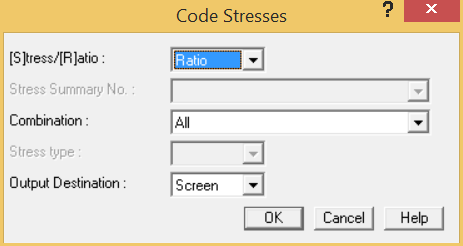
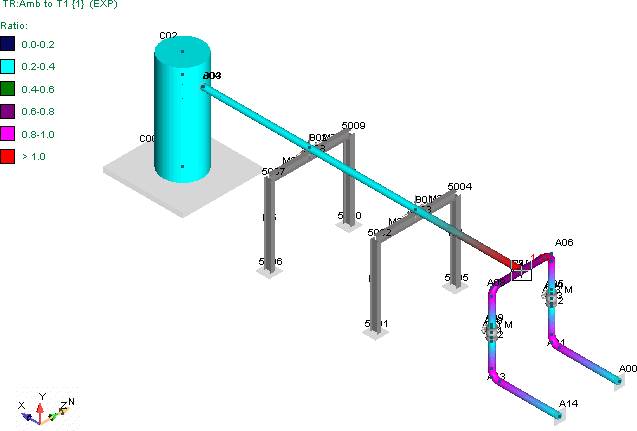
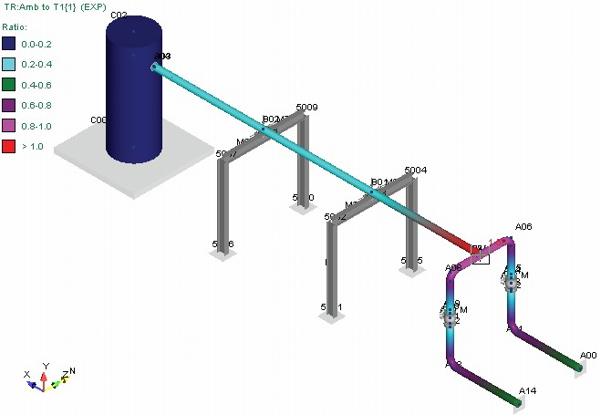

Reviewing Code Stress Results
As a last step, we will interactively review the piping code stress results.
1. Select Result > Interactive > Code Stresses.
- The Code Stresses dialog is displayed as shown below. Press OK to accept the defaults.

- The Stresses information window is displayed. AutoPIPE displays a color-coded display of the stress results by stress ratio. We see that calculated stress exceeds the allowable for the Amb to T1 combination by a ratio of 1.41 {1.53} at point A07 (branch side). Note that this occurs in our region of large displacement as shown earlier in our deflected shape.

